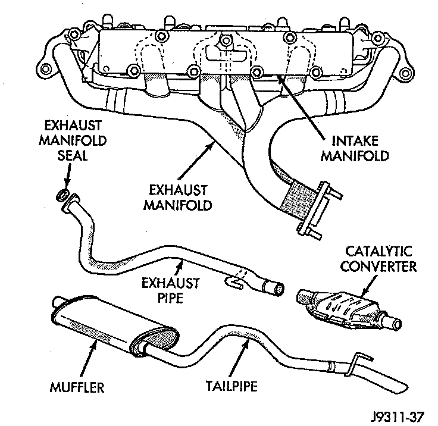

Exhaust System: Description and Operation

GENERAL INFORMATION
The basic exhaust system consists of an exhaust manifold, exhaust pipe with oxygen sensor, catalytic converter, heat shield(s), muffler and tailpipe. The exhaust system uses a single muffler with a single monolithic-type catalytic converter. This engine uses a seal between the exhaust manifold and exhaust pipe to assure a tight seal and strain free connections. The exhaust system must be properly aligned to prevent stress, leakage and body contact. If the system contacts any body panel, it may amplify objectionable noises originating from the engine or body.
INSPECTION
When inspecting an exhaust system, critically inspect for cracked or loose joints, stripped screw or bolt threads, corrosion damage and worn, cracked or broken hangers. Replace all components that are badly corroded or damaged. DO NOT attempt to repair. When replacement is required, use original equipment parts (or their equivalent). This will assure proper alignment and provide acceptable exhaust noise levels.
CAUTION: Avoid application of rust prevention compounds or undercoating materials to exhaust system floor pan heat shields. Light overspray near the edges is permitted. Application of coating will result in excessive floor pan temperatures and objectionable fumes.